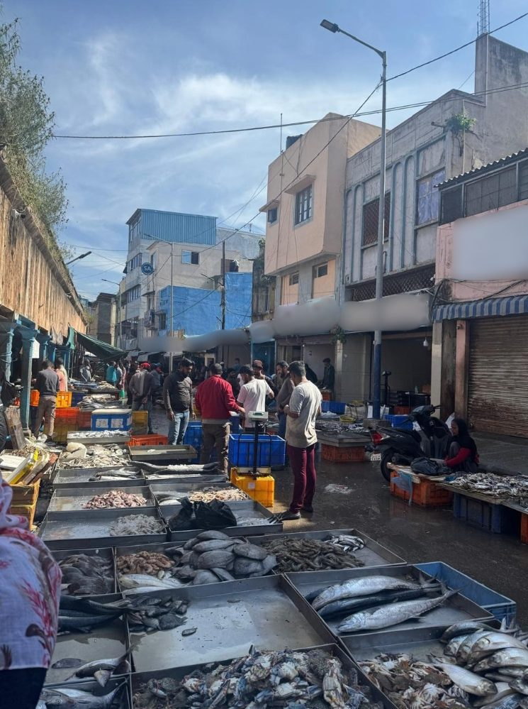

Challenge
A single image fish.png (745x999 PNG) and the title "One-pound-fish". No description (platform shows "???"). Identify the place in the photo.

Solution
Step 1 - Rule out steganography
Standard checks (exiftool, binwalk, zsteg, strings, PNG chunk walk) confirm no hidden data, no EXIF/GPS, no appended files. This is a pure visual geolocation challenge.
Step 2 - Analyze the image
The photo shows an outdoor fish market in a narrow lane:
- Left side: A tall, old stone/masonry wall with vegetation on top and a sloped coping - resembling a canal or fort compound wall. Blue-painted market stalls run along its base.
- Right side: Multi-story concrete buildings with colonial-era arched windows, flat roofs, roll-up metal shutters, and a blue-and-white striped awning.
- Background: A blue circular "SA" sign on a building, a blue metal-clad structure, dense overhead cabling, a modern municipal streetlight.
- People: Men in casual clothes, a woman in a black hijab selling fish on the right.
- Goods: Stainless-steel trays of fish on the ground, blue and orange HDPE crates, a parked scooter with a white plate.
- Obstruction: A white horizontal smudge/blur across the center obscures signage - likely deliberate to increase difficulty.
Step 3 - Reverse image search
| Engine | Result |
|---|---|
| TinEye | 0 matches - image is not on the indexed web |
| Yandex CBIR | Generic "fish market" tag, similar images from Malé, Hurghada, Blida - no exact match |
| Bing Visual Search | Auto-query "Essaouira Fish Market" (incorrect), no pages containing the image |
| Google Lens | Russell Market, Shivajinagar, Bengaluru, India ✅ |
Google Lens was the intended solve path. Its AI Overview identified the image as:
"The open-air fish and seafood market section outside Russell Market in Shivajinagar, Bengaluru, India."
Step 4 - Confirm the identification
Russell Market fits every visual clue:
- Built in 1927 in Tudor/colonial style by the British - explains the arched windows and old masonry.
- Located in Shivajinagar, a predominantly Muslim neighborhood in central Bengaluru - explains the hijab-wearing vendors.
- The tall wall on the left is the compound/boundary wall of the market complex.
- The outdoor fish selling area spills into the narrow lanes adjacent to the main market building.
- The CTF is organized by ISFCR at PES University, Bengaluru - the photo was almost certainly taken by a student at their own city's iconic market, just 3 km from campus.
The title hint
"One-pound-fish" references the viral 2012 song by Muhammad Shahid Nazir, a fishmonger at Queen's Market in London. The title is thematic (fish market → fish market photo) rather than a direct pun on the place name - though it may also nod to the lively, chaotic atmosphere shared by both markets.
Flag
isfcr{russell_market}Lessons learned
- Google Lens is the weapon of choice for GeoINT. Other reverse image search engines (TinEye, Yandex, Bing) failed to identify this unindexed photo. Google Lens's visual feature matching and AI overview nailed it instantly.
- Check your IP. Google Lens aggressively captchas datacenter/VPN IPs. The solve required uploading the image to imgur (a host Google can fetch from) and using the
uploadbyurlLens endpoint. - Don't overthink the title. The "One-pound-fish" title led to extensive (incorrect) analysis of Pondicherry ("pond"-icherry) and Algeria. The simplest reading - it's a fish market challenge - was correct.
- Local context matters. The CTF organizers are in Bengaluru. A 229-solve OSINT challenge is likely something familiar to them - their own city's most famous market.